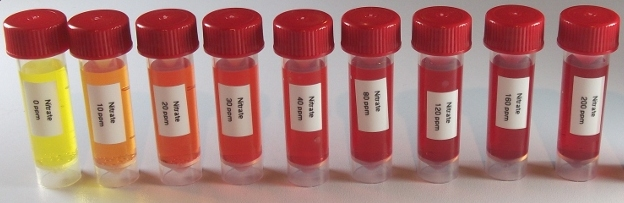

API nitrate test kit¶

Reagents & Equipment¶
- Colorimeter
- Cuvettes
- 5 mL sample bottles or other capped tubes
- API nitrate test kit
- (Optional) Distilled water for sample dilutions
Colorimeter set-up¶
- Wavelength: 528 nm. Green led (colorimeter RGB board)
- Nitrate standard data: download a data file or prepare your own nitrate standard data
- Before measuring blank the colorimeter against water or a distilled water sample developed with API reagent as described below
Method¶
- Fill an empty sample bottle to the 5 mL line with your water sample.
- Add 10 drops of reagent from Bottle # 1 to the sample, cap and invert several times to mix
- Vigorously shake Bottle # 2 for 30-60 secs
- Add 10 drops of reagent from Bottle # 2
- Cap the bottle and shake thoroughly to mix.
- Wait at least 5 mins for the color to develop.
- Pour some of the sample into a cuvette, place in the colorimeter and click measure. The program will return the nitrate concentration in ppm.